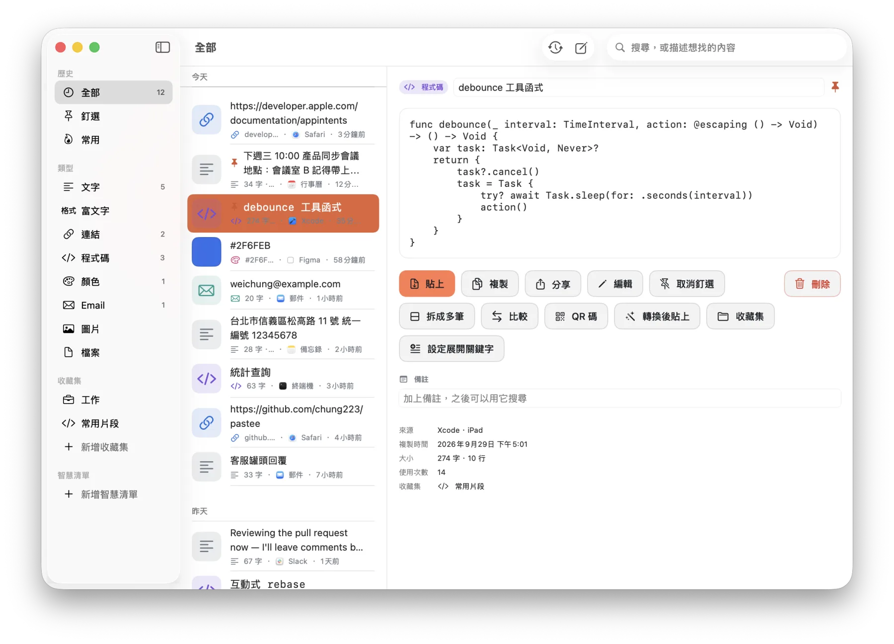
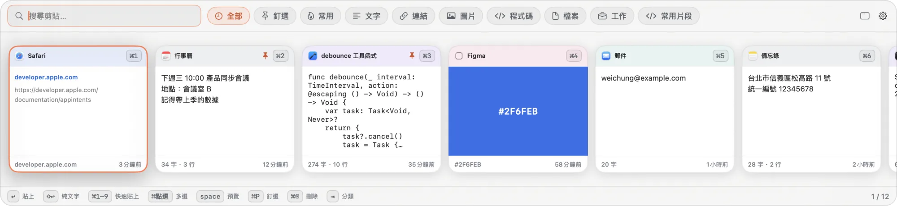
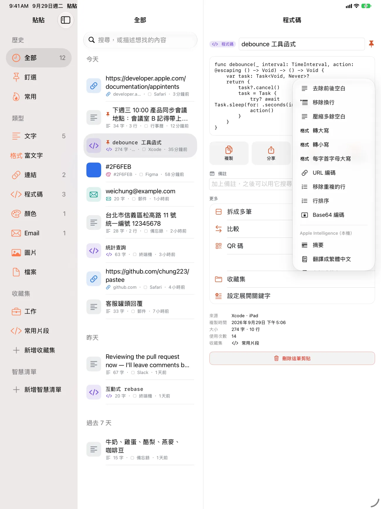

App Intents 文件：讓系統接上你的動作
developer.apple.com/documentation/appintents
已抓到網頁標題09:12
週三 · 09:12 → 18:40
系統剪貼簿只記得最後一筆。貼貼把每一筆留下來、標好類型，下次要用的時候，打兩個字就找到。全部只存在你的裝置和你自己的 iCloud，不需要帳號。
⌘C試試看：在這一頁複製任何一段字。它只會存在這個分頁裡。
App Intents 文件：讓系統接上你的動作
developer.apple.com/documentation/appintents
高鐵車票單程 · 標準車廂
台北08:12→左營09:45
// 搜尋框打字時，不要每個字都查一次
func debounce(_ interval: TimeInterval,
action: @escaping () -> Void) -> () -> Void {
var task: Task<Void, Never>?
return { task?.cancel(); task = Task { … } }
}週三 15:00 產品同步會議
地點：會議室 B
記得帶上一季的留存數據
lin.yating@studio-ko.tw
youtu.be/q8Wz3xV0bLk?t=94&si=Hk2vT0aQ&utm_source=line
自動分類
不用自己整理。複製進來就分成八種：文字、富文字、連結、程式碼、顏色、Email、圖片、檔案。重複複製同一個東西不會變成兩筆，只會把舊的提到最前面。
搜尋
打幾個字母就夠了。貼貼會猜你要的是哪一筆，把它排在最前面。
換個字試試：
空白隔開就是多個關鍵字。「widget kit」找得到「WidgetKit」。
完全相同的排最前，接著是開頭、詞首、中間符合；釘選、常用和最近用過的再往前一點。
命中太少就比對縮寫，所以「wdgt」也找得到。
截圖裡的字也搜得到，存進來的時候就已經在你的裝置上辨識好了。
轉換後再貼
原本那筆永遠不會被改，轉換只發生在貼出去的那一次。
去掉追蹤參數
https://youtu.be/q8Wz3xV0bLk?t=94&si=Hk2vT0aQ&utm_source=line
t 在 YouTube 是「從第幾秒開始播」，所以留著；同一個 t 在 X 是追蹤，就拿掉。每個網站有自己的規則。
iPhone・iPad・Mac
按 ⇧⌘V，貼貼從畫面底部浮上來，不搶走你正在用的 App。選好就貼進去，貼完就消失。


iOS 不讓背景的 App 偷看剪貼簿，所以貼貼把入口放在你本來就在用的地方。iPad 上是三欄，外接鍵盤也能用 ⌘F 搜尋、⌘1–9 直接複製。

隱私
貼貼沒有帳號、沒有登入、沒有分析工具，也沒有第三方 SDK。開發者沒有伺服器，收不到你的任何資料。
偵測到信用卡號，畫面上只剩圓點。貼上時仍是原本的號碼；可以設定幾分鐘後自動刪除。
方案
大部分功能都免費，包括所有隱私功能。
NT$0
不設筆數上限，所有隱私功能都在。
NT$290不是訂閱
免費版的全部，再加上：
iOS 不讓在背景的 App 讀剪貼簿。回到貼貼時，它會偵測到新內容，顯示系統的「貼上」按鈕，不會跳權限提示；也可以改用貼貼鍵盤、分享選單、捷徑或動作按鈕，不必離開正在用的 App。
鍵盤要讀到你存在貼貼裡的剪貼，才需要這個權限。貼貼鍵盤不連網路，也不會記錄你打的字。
在。Pro 是一次買斷，跟著你的 Apple 帳號走。在新裝置打開設定裡的貼貼 Pro，按「恢復購買」就好。就算沒有 Pro，你已經存下的片段和剪貼也永遠讀得到，只是不能再建立新的片段、不能開始同步。
可以用區網直傳：兩台裝置在同一個 Wi-Fi、輸入相同的配對碼，就會直接互傳，不經過任何伺服器，內容端對端加密。這個功能預設關閉，也不需要 Pro。
iPhone 需要 iOS 26、iPad 需要 iPadOS 26，Mac 版需要 macOS 26。